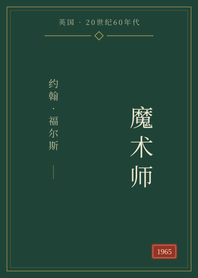

魔术师
一、基本信息
| 作者 | 约翰·福尔斯 |
|---|---|
| 成书/出版 | 1965年（Britannica B399：The Magus (1965; revised ed. 1977; filmed 1968)——希腊海岛） John Fowles — Encyclopaedia Britannica（百科全书） |
| 国别/地区 | 英国 |
| 时代 | 现当代 · 20世纪60年代 |
| 体裁 | 长篇小说 |
| 语言 | 英语 |
《魔术师》上帝游戏图（主题·结构图）
二、创作背景
Britannica（B399）：The Magus——'set on a Greek island, about an English schoolteacher who befriends a mysterious local man'（希腊海岛：英国教师结识神秘当地人）——修订版1977——电影1968。
Britannica（B399）：福尔斯——'combine psychological probings—chiefly of sex and love—with an interest in social and philosophical issues'。
题材（通说待核）：康奇斯的'上帝游戏'——心理'戏法'。
三、内容脉络
（通说待核）尼古拉斯·厄菲与康奇斯的'游戏'：'神岛'的表演。
（通说待核）'魔术师'：心理'戏法'的导演。
四、主要人物表
| 人物 | 身份 | 说明 |
|---|---|---|
| 康奇斯 | '魔术师' | （通说待核，B399未载） |
| 尼古拉斯·厄菲 | 英国教师 | （通说待核） |
五、主题与艺术特点
- '上帝游戏'的心理表演（通说待核）。
- 海岛的'迷'（B399：mysterious local man）。
- '性与爱'的探询（B399）。
六、影响与评论
- Britannica：'revised ed. 1977; filmed 1968'（B399）。
John Fowles — Encyclopaedia Britannica（百科全书） - Britannica：'psychological probings'（B399）。
John Fowles — Encyclopaedia Britannica（百科全书）
七、阅读建议
难点
- '上帝游戏'的层。
- 希腊海岛的地理。
- 《魔术师》中译名（《魔法师》）待核。
- 英文原版。
福尔斯第二作；与《法国中尉的女人》对读。
八、待核实
- 康奇斯/厄菲人名核对（通说）。
- 1965年出版细节与1977修订版待核。
- '上帝游戏'术语待核。